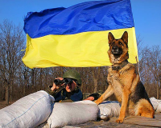
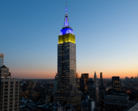
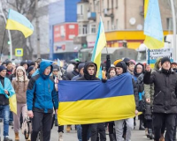
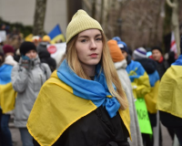
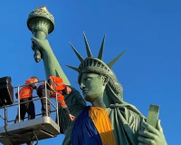

Україна
після перемоги
Ми незламний народе великої країни!
Ми пишаємось нашим минулим, цінуємо те, що маємо,
та готуємось до нашого спільного грандіозного майбутнього,
яке обов’язково настане після перемоги!
Ми незламний народе великої країни!
Ми пишаємось нашим минулим, цінуємо те, що маємо,
та готуємось до нашого спільного грандіозного майбутнього,
яке обов’язково настане після перемоги!

Ми-хлібороби. На своїй землі
господарюємо, створюємо,
дбаємо про оселю
Повністю
Ми з покон-віків-громади,
які включають об'єднання
індивідуальностей
Повністю
Фольклор розповідає правлу,
бо ми учасники, творці історії
та представляємо її, так як є
Повністю
У нас колядки, щедрівки, де
возвеличують господаря,
господинею, урожай
Повністю
Козаки - це державність!
Саме козаки були авторами та реалізато-
рами ідеї української держави та її легіти-
мації у міжнародній спільноті як незалежної
держави
Цінності
Відвага, вірність, здатність до самопожертви, любов до Батьківщини-такі характе- ристики успадкував укра- їнський народ у козаків
Турецький літописець Наїма писав про запорожців: "Можна впевнено сказати, що неможливо знайти на цілій землі сміливіших людей, які так мало б дбали про своє життя і так мало боялися смерті"
Блакитне небо на прапор України та жовте жито, ще одна ознака
нашого прагнення думками відірватися від землі та полетіти в
безкрайне небо, вийти за межі простору
Саме тому українц реалізовували прагнення вийти за межі за
допомогою розвитку авіаконструкторських заводів.
Підприємства "Антонов" створило гордість України, який став
сиволом українського непереможного духу - "мрiю" - найбiльший
транспортний літак у світі.
Хто ми сьогодні?
Ми продовжуємо жити, працювати та надиихати весь світ!
    "Вчора ми втратили, на жаль,
нашу "Мрію". Але стару "Мрію".
А нову ми зараз будуємо.
Слава Україні!"
Поділись думками, якою ти хочеш бачити Україну після перемоги?
Україна першою
у світі запустила
юридично легалізовані
цифрові паспорти

Комунікування
з іншими
державами. Розвиток
туризму.

Повноцінне вивчення
Історії України

Робота із свідомістю
людини-мова,
культура, освіта та
взаємоповага,
те, щo нас ідентифікує,
як українця.

Розвиток в сфері
технологій, науки,
відкриттів, створення
нових винаходів.

Україна-мілітарна,
модерна, демократична,
економічно ровинена
держава.
Майбутнє України це її люди!

Україна зможе зформулювати свої
ціннісні орієнтири та транслювати їх на
весь світ, а саме: Можливо все, навіть
те, у що ви не вірите! А вихід за рамки
самого себе - це більш гуманістично,
ніж постійно прагнути вийти за рамки
технологічного розвитку

Українці, як нація, стають зразком
волевиявлення та прикладом побудови
демократичних відносин не ”згори
донизу”, а “знизу догори”!

Україна стає найбільш популярним та
поширеним символом свободи, віри,
правди та сміливості у всьому світі.
Все буде Україна!

Україна запрошує до першого в світі проекту колективної
відбудови країни, в якій будуть задіяні ініціативи різних країн
світу. Таким чином Україна дає можливість всьому світові
відчути, що таке колективна стратегія

Україна згадає про своє прагнення до неба та сонця, й
запропонує новий проект: щоб закінчити війни на Землі,
давайте будемо співпрацювати для нашого нового життя
в космосі
Ми - нація вільних людей, які будують нову свою країну!


Завантаж собі патріотичні наліпки


2022, Петров Ілля